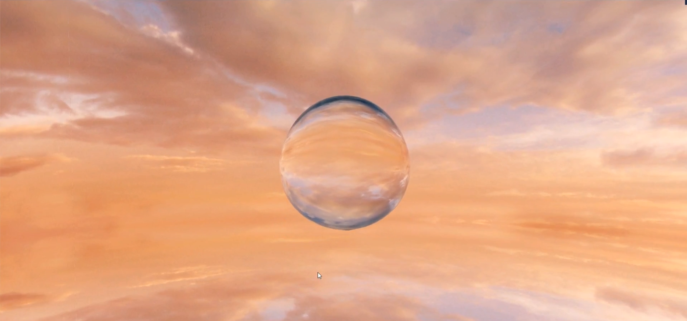
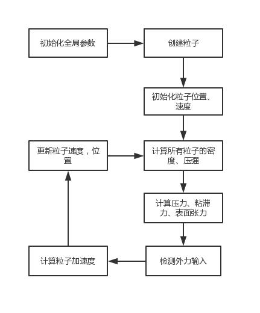

01 / INTERACTION
鼠标与流体实时互动
通过用户输入外力扰动粒子，观察流体表面对交互的连续反馈。
EARLY ARCHIVE · UNITY / GPU SIMULATION
以大量离散粒子模拟流体状态，并在 GPU 上完成邻域搜索、受力更新与体密度场构建。
HISTORICAL LEARNING PROJECT
DEMONSTRATIONS
通过用户输入外力扰动粒子，观察流体表面对交互的连续反馈。
调整外力方向，让粒子由受重力约束的液体转变为围绕中心聚集的三维流体。
将外部模型作为空间约束或目标形状，展示粒子系统对不同几何轮廓的响应。
OVERVIEW
该项目使用 SPH（光滑粒子流体动力学）模拟离散流体质点。每个粒子保存位置、速度和密度等状态；每一帧根据纳维－斯托克斯方程近似计算重力、压力、黏滞力、表面张力及用户输入外力，再更新速度与位置。
单帧内各粒子的状态可以并行计算，因此主要更新流程由 Compute Shader 完成。为了避免对全部粒子进行两两搜索，系统将空间划分为立方体网格，并只检查当前网格及相邻网格中的粒子。
CORE SYSTEMS
根据邻域粒子的密度和速度计算压力、黏滞力与表面张力，并叠加重力和交互外力。
按网格编号在 GPU 上排序粒子，记录每个网格对应的索引范围，以缩小邻域搜索范围。
将粒子密度写入 3D 纹理，通过密度梯度重建法线，再计算天空盒的反射与折射采样。
FRAME PIPELINE
更新粒子状态与空间索引后，将粒子映射为三维密度场；从相机发射射线，以二分法定位流体边界，通过密度梯度求取法线，最后依据斯涅尔定律混合反射和折射结果。
